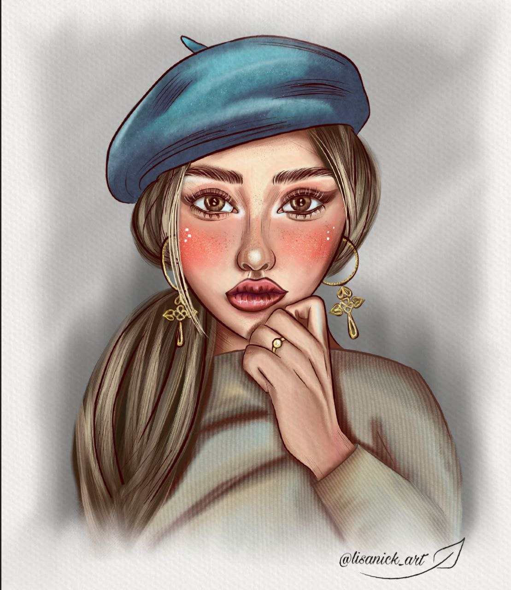
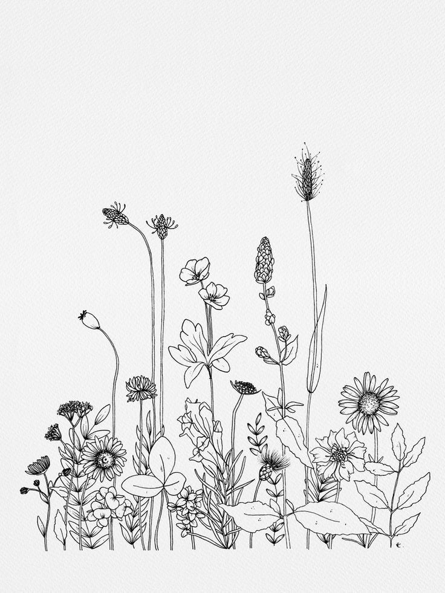

Словарь художника
В каждом сообществе по интересам есть свои специфические термины и жаргонизмы, многие из которых приходят из иностранных языков. В данном разделе вы можете ознакомиться с некоторыми терминами, которые часто используют художники.
Аналог
Художественное изображение, аналогичное вашему рисунку, то есть, рисунок на ту же тему, что и у вас, но выполненный другим художником. Аналогом считается именно рисунок, выполненный в той же технике, что и у вас (не фотография). Например, вы рисуете меч. Чтобы посмотреть, как справились с этой задачей другие художники и что сейчас популярно в рисовании мечей, вы и смотрите аналоги.
Арт
От англ. Art — «искусство, художество». В современном значении у художников используется как синоним слову «рисунок». Часто приставка «арт» используется, чтобы подчеркнуть принадлежность к изобразительному искусству: «арт-сообщество», «арт-челлендж». Также есть производные слова: «артер» — художник, «артить» — рисовать.

Ахроматические цвета
Цвета, в которых отсутствует цветной пигмент: белый, чёрный и оттенки серого.
Блюр
От англ. Blur — «размытие». Художественный приём, который заключается в размытии объектов. В русском варианте есть производный глагол «блюрить», «заблюрить», то есть — размыть какой-то объект или фон.
ВИП (WIP)
Аббревиатура «Work In Process», означающая «работа в процессе». Художники часто делятся друг с другом ВИП-ками, чтобы на ранних этапах рисунка получить совет и поправить ошибки.
Глаз замылился
Это жаргонизм, употребляемый в случаях, когда художник уже слишком долго делает иллюстрацию и не способен объективно оценить, насколько удачно она получилась. На помощь такому художнику приходят другие художники, которые могут взглянуть на картинку со стороны, или небольшой отдых, переключение на другую иллюстрацию.
Детализация
Процесс добавления мелочей, деталей в иллюстрацию. Один из этапов рисунка, на котором объекты приобретают более узнаваемый и проработанный вид.
Диджитал, диджитал арт
От англ. Digital art — «цифровое искусство». Это, в широком смысле, создание произведений искусства любыми цифровыми способами. В случае с художественным искусством, так называют рисунки, созданные посредством работы с цифровыми графическими редакторами, выполненные любыми способами (коллаж, фотобаш, рисунок мышкой или с помощью планшета и т. д.). Также диджиталом называют рисунки, созданные в цифровом виде. Например: «Мне больше нравится работать в диджитале, чем рисовать на бумаге».

Драфт
От англ. Draft — «черновой». В рисунке это означает черновой набросок, грубый, без деталей. Один из первых этапов в рисовании, когда идёт поиск основной формы объекта, его пропорций и структуры. Как правило, используется в игровой индустрии и концепт-арте.
Дудл
От англ. Doodle — «чиркать». Это рисунки, выполненные очень быстро, по наитию. Объекты рисуются один за другим, у дудла нет продуманной композиции или сюжета, объекты добавляются хаотично, куда захочется автору в данную секунду. Этот рисунок создаётся, чтобы развить фантазию, разрисоваться или просто занять время.
Колоринг
От англ. Color — «цвет». Это процесс подбора цвета и раскрашивания рисунка. Этот этап подразумевает сплошную заливку частей иллюстрации цветом, без прорисовки материалов и деталей.
Коммишн
От англ. commission — «заказная работа». Это рисунки, сделанные на заказ. Как правило, выполняются за деньги или по бартеру.
Лайн, лайн арт
От англ. Line — «линия». Лайном называют этап работы, когда черновой набросок прорисовывают аккуратно и детально, используя только линии. Лайн-артом называют рисунок, в котором используются только линии, плавные и аккуратные. При помощи линий передают тон, светотень и текстуру материалов.

Оверпейнт, овер
От англ. Over — «поверх, выше» и paint — «рисовать». Это перерисовка всей картинки или её части прямо поверх вашей иллюстрации или скетча, выполняемая другим иллюстратором. Цель такой перерисовки — наглядно указать на ошибки и предложить пути их исправления. Как правило, оверы выполняются быстро и не очень аккуратно, чтобы в целом показать принцип, а не дорисовать иллюстрацию до конца. Зачастую оверы выполняются преподавателями и наставниками во время обучения.
Окклюжен, АО, окклюзия
От англ. Ambient occlusion — это модель затенения, используемая в трёхмерной графике и позволяющая добавить реалистичности изображению за счёт вычисления интенсивности света, доходящего до точки поверхности. Как правило, окклюженом в рисунке называют затемнения в углах и на стыках частей объекта. Используется в тех случаях, когда рисунку нужно добавить больше реализма.
Пайплайн
От англ. Pipeline — «конвейер». Это определённый порядок действий, по которому происходит выполнение работы. В рисунке пайплайн начинается с наброска и движется к завершённой работе через определённые этапы. В зависимости от поставленных задач и техники исполнения, этапов в пайплайне может быть больше или меньше.
Пресет
Сохранённый набор настроек или последовательности действий, помогающий ускорить время работы. Зачастую пресеты используются при обработке иллюстраций или фотографий, когда нужно одинаково обработать серию изображений. Чтобы не повторять многажды одни и те же действия, создаются пресеты.
Рендер
От англ. Render — визуализация, отрисовка. Этот термин пришёл из 3д-графики, где обозначал процесс финальной обработки изображения до фотореализма. В рисунке этот термин означает финальную отрисовку иллюстрации, работу с мелкими деталями, фактурами и текстурами, царапинками и трещинками. В широком смысле он обозначает любую стадию отрисовки, когда значительных изменений в работе уже точно не будет и остаётся только «шлифовать» иллюстрацию. Часто используются производные глаголы «рендерить», «отрендерить», жаргонизм «рендернуть», означающие процесс рендера картинки.
Референс
Вспомогательное изображение (чаще фотография) или набор изображений, позволяющие художнику точнее разобраться с формой, строением и другими характеристиками объекта. Часто референсы заменяют натуру, особенно при рисовании несуществующих в реальности объектов. Референсы не предполагают полного копирования, они нужны лишь для того, чтобы художник точнее понимал, что и как ему нужно нарисовать.
Скетч, скетчинг
У художников это синоним к слову «набросок», обозначающий быструю зарисовку объекта. Как правило, скетчи выполняются с небольшим количеством деталей и в вольной манере, удобной для художника. Главная задача скетча — ухватить быстро текущее состояние объекта или персонажа. Скетчи могут выполняться как с натуры, так и из головы, чтобы не упустить мысль. Скетчи могут быть быстрыми и неаккуратными, а могут быть прорисованными.

Тамбнейл
От англ. Thumbnail — «размером с ноготок». Это очень маленькие зарисовки , как правило, пятновые, которые направлены на быстрый поиск нескольких вариантов композиции. Чаще всего их рисуют для локаций или полноценных иллюстраций с окружением, а также при рисовании комиксов или серии иллюстраций.
Традишка, традишнл
От англ. Traditional — «традиционный». Так называют техники рисования, появившиеся до цифровой эры и связанные с физически ощутимыми материалами (холст или бумага, карандаши, краски, маркеры и т. д.). Если вы ведёте бумажный скетчбук или предпочитаете писать красками, а не рисовать на графическом планшете, знайте — вам по душе традишка.
Туториал, тутор
От англ. Tutorial — «обучающий». Это материалы (схемы, видеоролики, гифки), в которых пошагово рассказывается что-то обучающее. Часто можно встретить туториалы по рисованию каких-то предметов или их частей, материалов, созданию эффектов (свечения, мерцания), туториалы по использованию каких-либо инструментов.